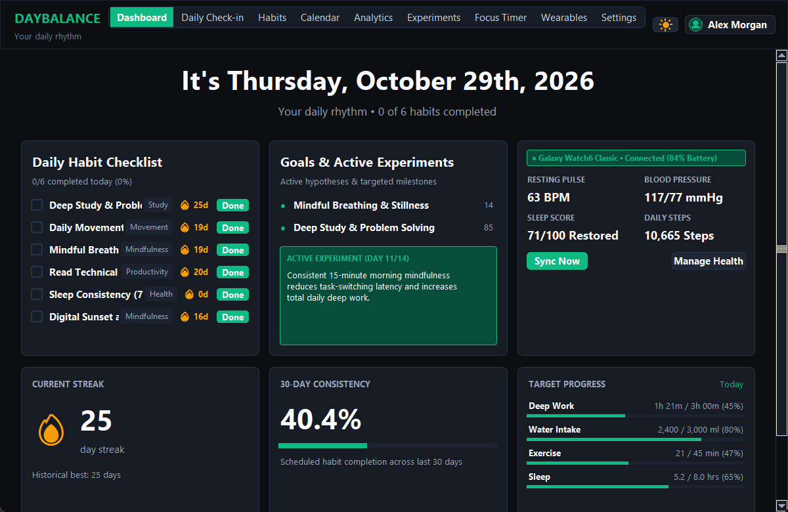

DAYBALANCE
HABIT SCIENCE.
A privacy-first personal behavioral analytics workspace transforming habit check-ins into empirical self-experiments — pairing schedule-aware streaks with Pearson and Spearman rank correlations across sleep, study, mood, and energy.

EMPIRICAL PERSONAL ANALYTICS WITHOUT CLOUD TRACKERS.
Generic habit apps break streaks on scheduled rest days and hallucinate generic pep talks. DayBalance respects non-daily schedules and validates lifestyle correlations mathematically.
Schedule-Aware Streaks
Supports daily, weekday, weekend, and custom frequencies plus protected rest days without breaking earned streaks.
Pearson & Spearman Engine
Computes bivariate Pearson r and Spearman rho rank correlations across sleep, study minutes, mood, and energy.
Sample-Size Guard (n >= 7)
Blocks spurious trend claims when sample size is insufficient and displays honest non-causal caveats.
A/B Habit Experiments
Run structured baseline vs intervention trials (e.g., morning walk impact on afternoon deep-work focus).
Built-in Focus Timer
Integrated Pomodoro deep-work timer that automatically logs completed focus sessions directly to daily lifestyle metrics.
Multi-Profile SQLite WAL
Composite uniqueness constraints, idempotent migrations, Light/Dark themes, and zero external API calls.
HOW IT WORKS.
Modular separation across Streamlit presentation views, pure-Python statistical services, and SQLite WAL persistence.
Daily Check-In
Sub-2-min habit & lifestyle capture.
Streak Engine
Schedule & rest-day aware evaluation.
Stat Engine
Pearson r, Spearman ρ & OLS fit.
A/B Evaluator
Baseline vs experiment comparison.
Plotly UI
9 views across Dark & Light themes.
APPLICATION SCREENSHOTS.
Live screens captured from the running application. Click any image to view full size, or follow setup instructions in the GitHub repository.
STATISTICAL & BEHAVIORAL VERIFICATION.
Key modules, rules, safety checks, and automated test results documented in the repository.
| Engine Module | Methodology | Verified Output |
|---|---|---|
| Correlation Explorer | Pearson r + Spearman ρ + OLS trendline | Blocked unless n >= 7 valid pairs |
| Streak Calculator | Frequency masks + rest-day grace logic | Zero false streak resets |
| Measurement Types | Boolean, duration, count & numeric targets | Flexible Morning/Evening routines |
| Automated Testing | Unit & integration suite via pytest | 33 / 33 Passed (100%) |
CORE TECHNOLOGIES.
Frameworks, databases, visualization tools, and testing libraries used in DayBalance.
FUTURE ENHANCEMENTS.
Upcoming improvements planned for DayBalance.
EXPLORE SOURCE & DOCS.
View the complete codebase, sample datasets, quick-launch scripts, and automated test suites on GitHub.